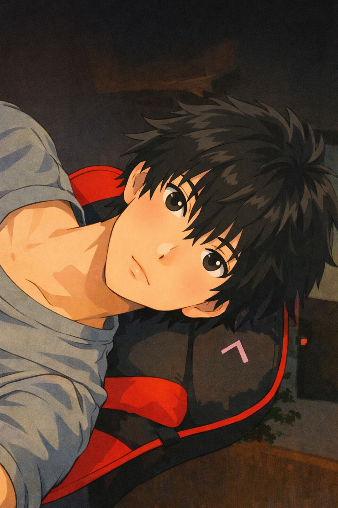
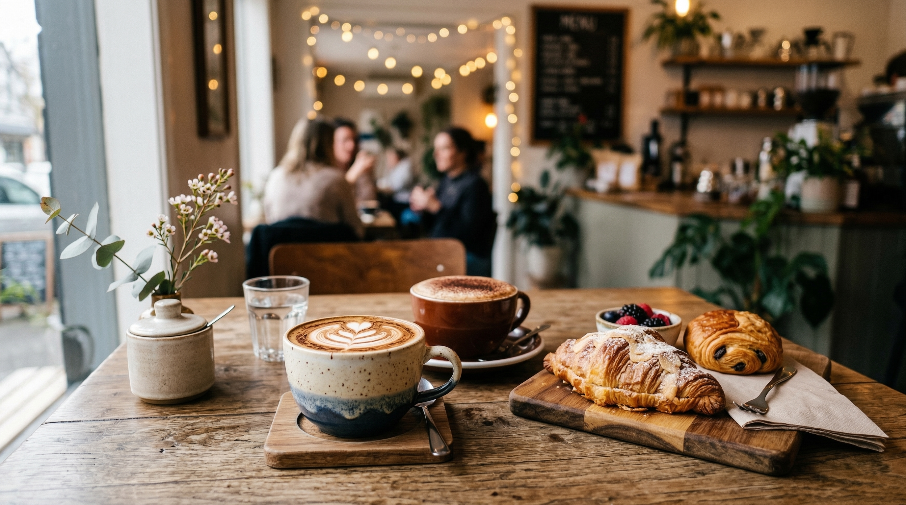

Teikirisi Café de Txala es una cafetería muy bien valorada (alrededor de 4.9⭐) ubicada en el centro de Oaxaca de Juárez que destaca por su ambiente acogedor y relajado, ideal para tomar un café de especialidad, trabajar, estudiar o pasar un rato tranquilo; los clientes suelen mencionar que el servicio es amable, el café está bien preparado y los precios son accesibles, lo que la convierte en una excelente opción si buscas una experiencia local más artesanal y menos turística que otras cafeterías grandes, aunque no hay mucha información pública detallada sobre su menú completo (lo que sí se sabe es que mantiene una excelente reputación por la calidad del café y la atención).
Audio de Teikirisi



📍 Manuel Doblado 12, Oaxaca Centro
📧 info@teikirisi.mx
Back to menu